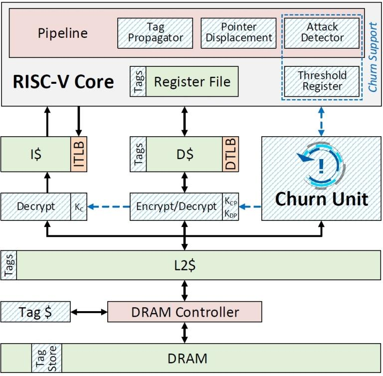

A arquitetura e organização de computadores. A arquitetura do computador lida com o design de computadores, dispositivos de armazenamento de dados e componentes de rede que armazenam e executam programas, transmitem dados e conduzem as interações entre computadores, redes e usuários
Processador anti-hacker pára ataque antes que ele comece
Fórum 1 – Arquitetura e Organização de Computadores por Adriane Aparecida Loper